Library / MiyeeStockBuddy: The Complete Guide to Indian Markets
Part 7. The Complete Pattern Gallery
A pattern is a picture of a negotiation. Buyers and sellers argue for weeks, and the shape their argument leaves on the chart tells you who is winning and where each side has drawn its line. Every pattern in this part is drawn to scale with its entry, its stop loss and its measured target marked, because a pattern without those three numbers is decoration rather than a plan.
Three rules that apply to every pattern here Wait for the close. A price that pokes through a level during the day and closes back inside has not broken anything. Intraday spikes through obvious levels are how large orders get filled, not signals. Volume decides whether it is real. Almost every pattern below wants quiet volume while it forms and heavy volume on the break. A breakout on thin volume fails often enough that it has its own name among traders: the bull trap. The measured target is an estimate. Use it before you enter, to judge whether the risk to reward is worth taking. Do not use it afterwards as a price you must hold out for. |
7.1 Continuation Patterns
These form during a trend and usually resolve in the same direction the trend was already going. They are pauses, not turns, and they exist because early buyers take profits while the people who missed the move wait for a better price.
Symmetrical triangle
Each rally stops a little lower and each dip stops a little higher, so the range narrows to a point. Buyers and sellers are converging on agreement, and when the agreement finally breaks the move is usually fast, because the pressure had nowhere left to go.
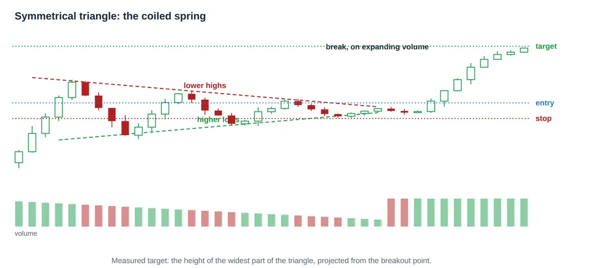
Figure 9. Symmetrical triangle. Each rally stops lower and each dip stops higher, so the range narrows to a point. Volume dries up through the squeeze and expands on the break. The direction of the break is not predictable from the shape, so wait for it rather than guess.
The direction of the break is not predictable from the triangle itself, and traders who guess it in advance are simply guessing. Wait for the close outside the boundary, then trade it. Volume drying up through the squeeze and expanding sharply on the break is what separates a real resolution from a drift.
Ascending triangle
A flat ceiling with rising lows underneath. Read what that means: buyers are willing to pay more on each attempt, while one large seller keeps offering the same price. Each attempt eats a little more of that seller’s stock, and when it is finally gone the price moves quickly. This is why the ascending triangle is treated as a bullish shape rather than a neutral one.
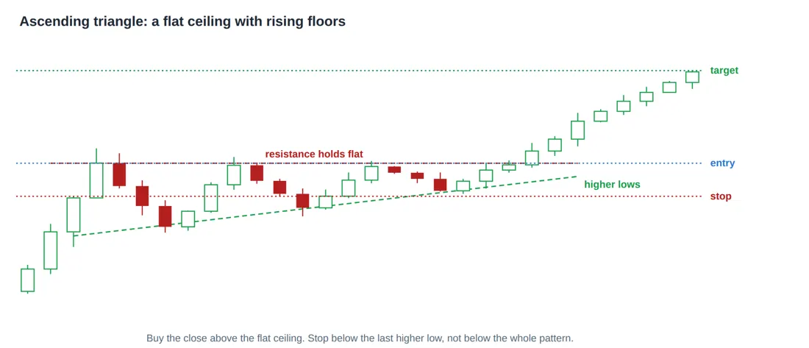
Figure 10. Ascending triangle. A flat ceiling with rising lows underneath. Buyers are willing to pay more each time while one large seller holds the same price, and when that seller is finally cleared the move is usually quick. It is read as a bullish pattern for that reason.
The rule to remember The stop belongs below the most recent higher low, not below the whole pattern. That is the point at which the rising floor has been broken, which is the thing that made the pattern bullish in the first place. A stop below the entire triangle is far wider than the idea requires, and a wider stop means a smaller position for the same risk. |
Descending triangle
The mirror image. A flat floor with falling highs above it. Sellers accept less on each attempt while one buyer keeps defending the same level, and when that buyer stops the fall tends to be quick. It is read as bearish for exactly the reason the ascending triangle is read as bullish.
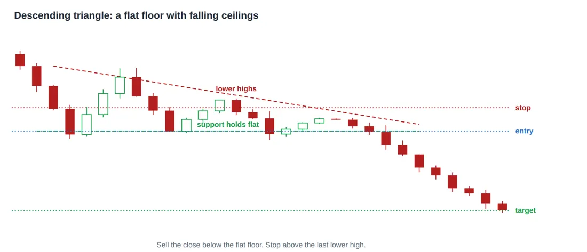
Figure 11. Descending triangle. A flat floor with falling highs above it. Sellers accept less each time while one buyer keeps defending the same level, and when that buyer stops the fall is usually fast. The mirror of the ascending triangle, and read as bearish.
Bull flag
A sharp rise, then a short and slightly downward drift on shrinking volume, then a resumption. The rise is called the pole and the drift is the flag. The drift is early buyers taking profit while the trend itself is unbroken, and the shrinking volume is the tell that no serious selling has arrived.
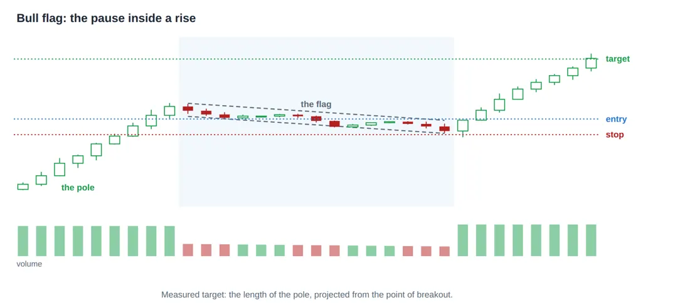
Figure 12. Bull flag. A sharp rise, then a short and slightly downward drift on shrinking volume, then a resumption. The drift is early buyers taking profit while the trend itself is unbroken. A flag that runs longer than two or three weeks has stopped being a flag.
Pricing a bull flag Pole runs from 100 to 130, so the pole is 30 points. The flag drifts down to about 120.5 over three weeks on falling volume. Entry, on the break out of the flag 125 Stop, below the flag low 119 risk 6 points Measured target = 125 + 30 = 155 reward 30 points Risk to reward = 1 to 5, which is why the flag is worth waiting for. |
Careful here A flag that runs longer than two or three weeks has stopped being a flag. A tight pause is buyers holding their positions; a long sideways drift is the trend losing its momentum, and it frequently turns into a top instead. |
Bear flag
The same shape upside down. A sharp fall, a drifting recovery on light volume, then the fall resuming. The drift tempts buyers into believing a bottom has formed, and those buyers are exactly what supplies the sellers for the next leg down.
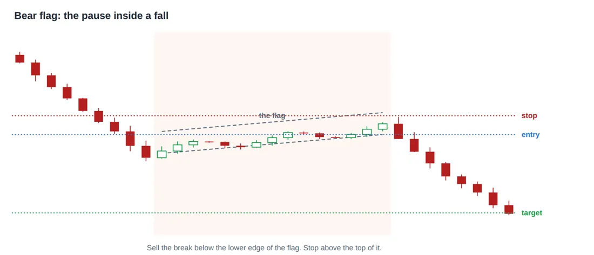
Figure 13. Bear flag. The same shape upside down: a sharp fall, a drifting recovery on light volume, then the fall resuming. The drift tempts buyers into thinking a bottom has formed, which is exactly what supplies the sellers for the next leg.
Pennant
A flag whose two edges converge rather than running parallel, which makes it a very small symmetrical triangle sitting inside a strong move. It behaves like a flag, resolves faster, and is read the same way.
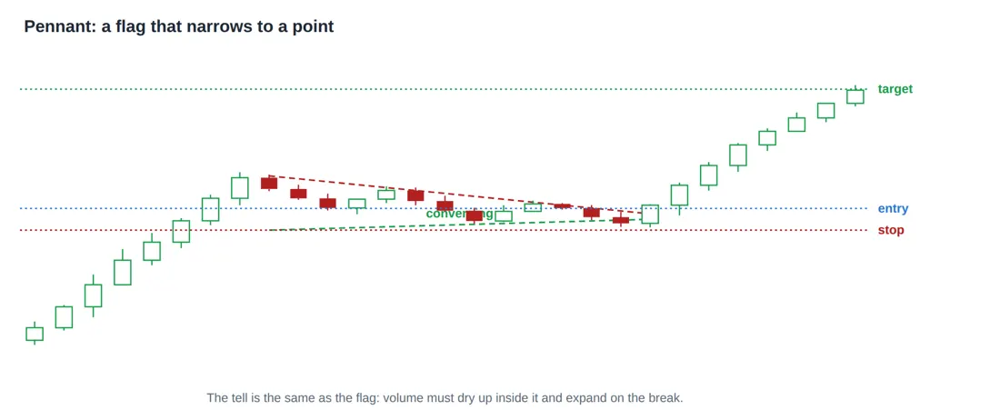
Figure 14. Pennant. A flag whose two edges converge instead of running parallel, so it is a very small symmetrical triangle inside a strong move. It behaves like a flag, resolves faster, and is read the same way.
Rectangle, also called a range or a box
Price bounces between the same floor and the same ceiling several times. It is the most common shape on any chart and the one that punishes indicator followers hardest, because trend tools generate signal after signal inside it and none of them work.
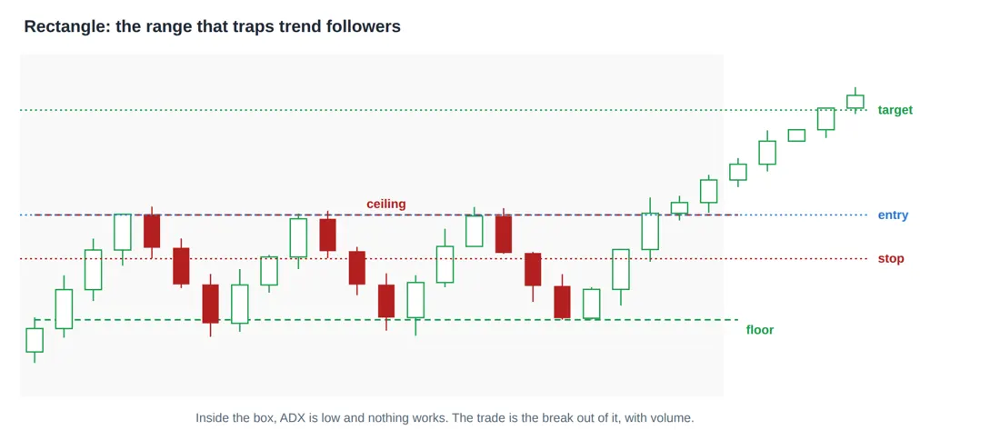
Figure 15. Rectangle, also called a range or a box. Price bounces between the same floor and the same ceiling several times. It is the most common shape on any chart and the one that punishes indicator followers, because trend tools give signal after signal inside it and none of them work.
The rule to remember Inside a rectangle, ADX is usually below 20 and doing nothing is the winning move. The trade is the break out of the box, with volume, not the fourth bounce inside it. This one observation would save most beginners more money than any pattern they could learn to trade. |
Ascending channel
Higher highs and higher lows running between two roughly parallel lines. Strictly this is a trend rather than a pattern, and it is tradeable while it holds: buy near the lower rail, trim near the upper one, and treat a close below the lower rail as the trend changing rather than as a cheaper entry.
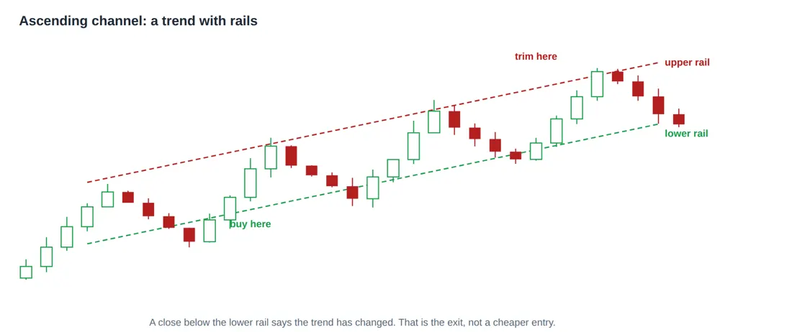
Figure 16. Ascending channel. Higher highs and higher lows running between two parallel lines. It is a trend rather than a pattern, and it is tradeable while it holds: buy near the lower rail, take profit near the upper one, and treat a close below the lower rail as the trend breaking.
Rising wedge, which is the exception
Both edges slope upwards, but the lows rise faster than the highs, so the shape narrows while the price is still climbing. It looks bullish and usually is not. The narrowing means each push higher is achieving less than the one before, and rising wedges break downwards more often than up.
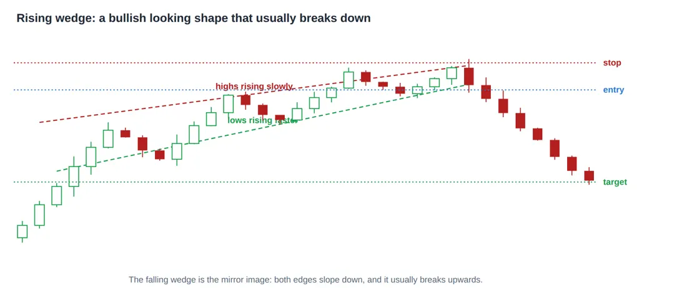
Figure 17. Rising wedge. Both edges slope up, but the lows rise faster than the highs, so the shape narrows while the price is still climbing. It looks bullish and usually is not: the buying is getting weaker with each push, and these more often break downwards.
The falling wedge is the mirror: both edges slope down, the shape narrows, and it more often breaks upwards. If you remember only one thing here, remember that a wedge and a triangle look similar and mean different things, and the difference is whether both boundaries slope the same way.
7.2 Reversal Patterns
These mark the end of a trend rather than a pause inside it. They take longer to form, they fail more often than continuation patterns, and the reason is simple: a trend in progress is more likely to continue than to end, so betting on the end is betting against the base rate. Insist on the confirmation.
Double top
Price reaches a level, falls back, returns to the same level and fails again. Two failures at the same price say that a large seller is sitting there. The second peak arriving on lighter volume than the first is the confirmation that the buying is weaker than it was.
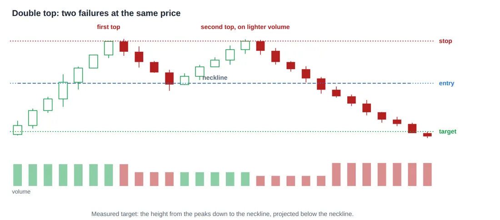
Figure 18. Double top. Price fails twice at the same level, which says a large seller is sitting there. The pattern is not complete until price closes below the low between the two peaks, called the neckline. Until that break it is only a range, and acting early is the common mistake.
Careful here The pattern is not complete until price closes below the low between the two peaks, which is called the neckline. Until that break it is a range, and every range eventually gets broken in one direction or the other. Selling on the second peak because it "looks like a double top" is the single most common way this pattern loses money. |
Double bottom
The same structure inverted. Price holds twice at the same level, and the second low arriving on lighter volume is the tell that the selling has exhausted itself. It is one of the more reliable bottoming patterns, and it gives an unusually clean stop loss just below the two lows.
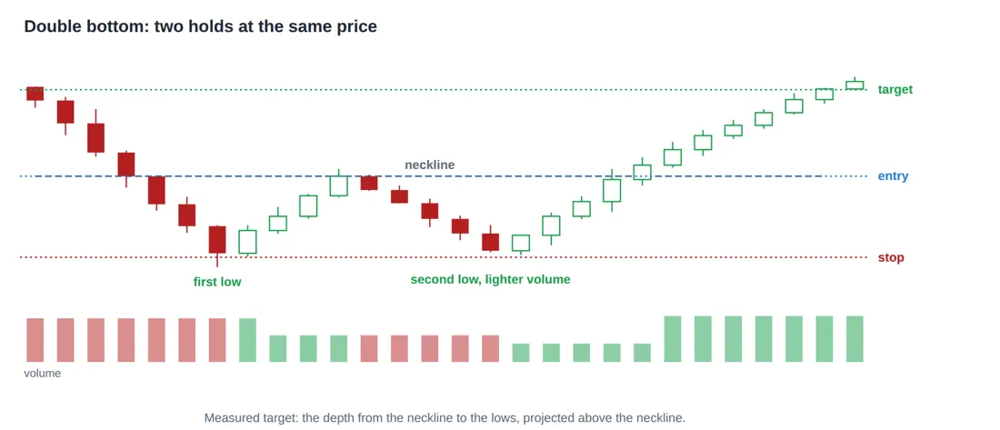
Figure 19. Double bottom. Price holds twice at the same level, and the second low arriving on lighter volume is the tell that the selling is exhausted. As with the double top, nothing is confirmed until price closes through the neckline above.
Triple top and triple bottom
Three failures at the same level rather than two. Rarer, and generally taken as stronger evidence on the straightforward logic that a level which has now turned three separate rallies is being defended by real supply rather than by coincidence.
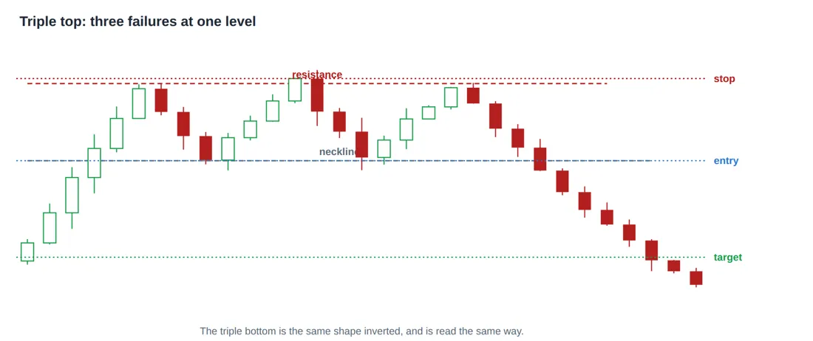
Figure 20. Triple top. Three failures at the same level rather than two. It is rarer than the double top and generally taken as stronger evidence, on the simple logic that a level which has now turned three separate rallies is being defended by real supply.
Head and shoulders
Three peaks with the middle one highest, and a neckline drawn under the two troughs between them. It is the most widely watched reversal pattern in the world, and part of the reason it works is circular: enough people place orders at the neckline that the break becomes real.
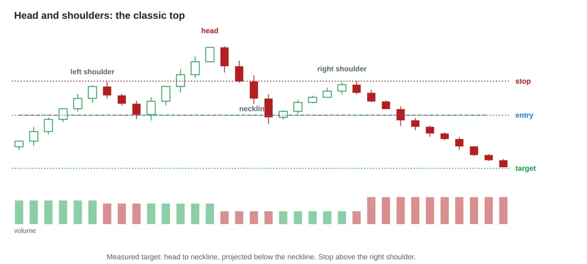
Figure 21. Head and shoulders. Three peaks with the middle one highest, and a neckline drawn under the two troughs. It is the most watched reversal pattern in the world, and part of why it works is that enough people place orders at the neckline to make the break real.
Pricing a head and shoulders Head 130 Neckline 105 Height 130 - 105 = 25 points Entry, on the close below the neckline 105 Stop, above the right shoulder 118 risk 13 points Measured target = 105 - 25 = 80 reward 25 points Risk to reward = 1 to 1.9, which is acceptable but not generous. A shoulder that forms lower and tighter gives a closer stop and a better ratio. |
Watch the volume profile as it forms. Classically, volume is heavy on the left shoulder, lighter on the head, and lighter still on the right shoulder, which says each successive push higher had less money behind it. That declining profile is worth more than the shape itself.
Inverse head and shoulders
The same three point structure at a bottom, with the deepest low in the middle. It marks the point at which the last forced sellers were cleared out, and the neckline break above is the confirmation.
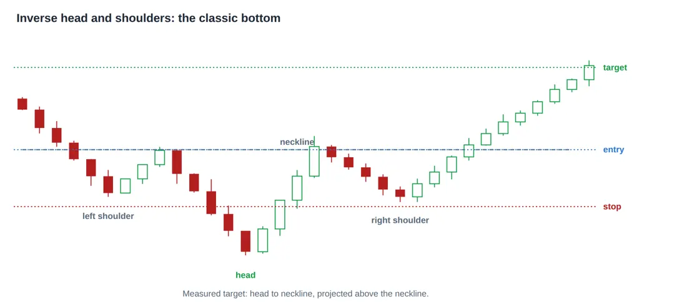
Figure 22. Inverse head and shoulders. The same three point structure at a bottom, with the deepest low in the middle. It marks the point where the last forced sellers were cleared out, and the neckline break is the confirmation.
Cup and handle
A long rounded bottom followed by a small pullback near the old high. The rounding is the important part: it means selling faded gradually rather than in a panic, and that the shares moved slowly from impatient holders to patient ones. The handle then gives an unusually tight stop, which is what makes this setup attractive rather than merely pretty.
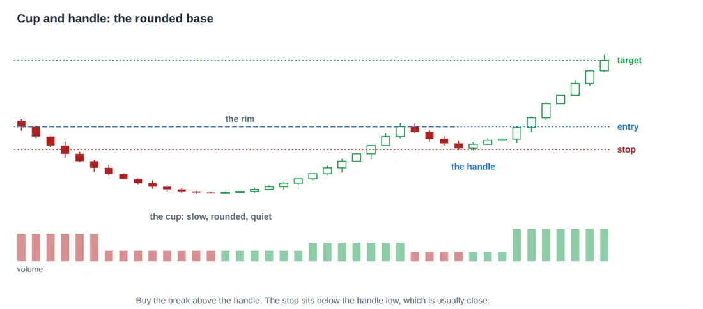
Figure 23. Cup and handle. A long rounded bottom followed by a small pullback near the old high. The rounding matters: it means selling faded gradually rather than in a panic, and that the shares moved slowly from impatient holders to patient ones. The handle gives a tight stop, which is what makes this setup attractive.
The rule to remember A tight handle means a close stop, and a close stop means a larger position for the same rupee risk. That relationship, between the quality of a setup and the size you can safely take, is the practical reason to be fussy about which patterns you trade. |
Rounding top
The mirror of the cup, and the pattern nobody wants to find in something they own. Price flattens at a high, drifts sideways for months, then begins a gentle decline that holders keep explaining away as a pause. There is never a single dramatic day that feels like the moment to sell, which is precisely why this shape traps people for so long.
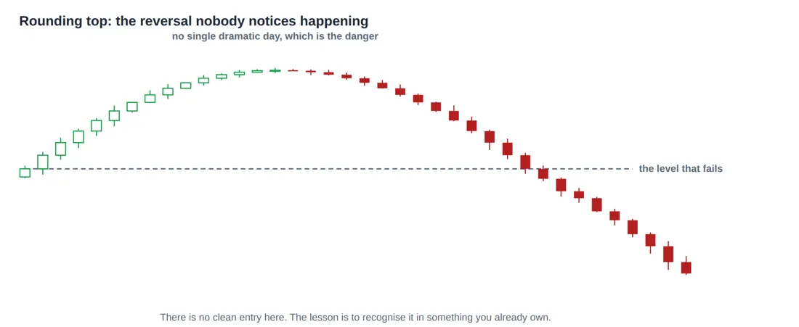
Figure 24. Rounding top. The mirror of the cup. Price flattens at a high, drifts sideways for months, then begins a gentle decline that holders keep explaining away as a pause. There is never a single day that feels like the moment to sell, which is exactly why this shape traps people.
7.3 Candlestick Formations
Chart patterns take weeks. Candlestick patterns take one to three sessions, which makes them faster and much noisier. They are best used as a trigger inside a larger idea rather than as a reason on their own: a hammer at a level that has already stopped price twice, on heavy volume, after a long fall, is worth acting on. The same hammer in the middle of a range is nothing at all.
Single candle shapes
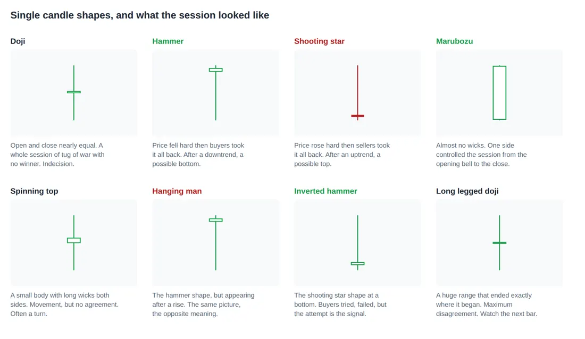
Figure 25. Single candle shapes. Each one is a sentence about a single session, not a story. A hammer in the middle of a range means nothing; the same hammer after a long fall, at a level that has stopped price twice before, on heavy volume, means something.
Notice that the hammer and the hanging man are the same drawing, and the shooting star and the inverted hammer are the same drawing. What separates each pair is only what came before it. That is the clearest possible illustration of why candlestick patterns cannot be read in isolation.
Two candle patterns
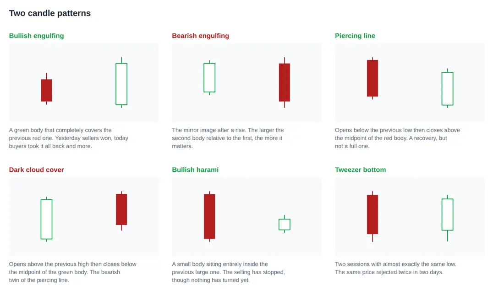
Figure 26. Two candle patterns. The second candle reverses what the first one said, and the more completely it does so, the stronger the signal. All of them need context: after a trend, at a level, with volume.
The general principle across all of these: the more completely the second candle reverses what the first one said, the stronger the signal. A green body that swallows the previous red one entirely says more than one that merely covers half of it, and both say more when the volume on the second day is larger.
Three candle patterns
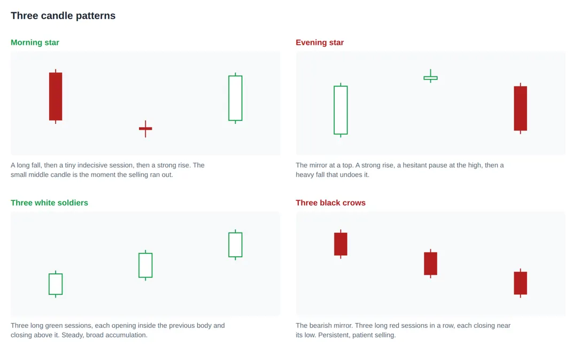
Figure 27. Three candle patterns. These take a full three sessions to form, which makes them slower and more reliable than a single candle, and they appear less often. The middle session is usually the one that carries the information.
These are slower to form and correspondingly more reliable. In the morning star and evening star, the middle session carries the information: a tiny indecisive candle after a long directional move is the moment the pressure ran out. The three soldiers and three crows say something different, which is that the move was steady and broad rather than a single panic.
7.4 The Complete Pattern Table
Pattern | Type | Entry | Stop loss | Measured target |
|---|---|---|---|---|
Symmetrical triangle | Either way | On the close outside, either side | Back inside the triangle | Height of the widest part |
Ascending triangle | Bullish | Above the flat ceiling | Below the last higher low | Height of the triangle |
Descending triangle | Bearish | Below the flat floor | Above the last lower high | Height of the triangle |
Bull flag | Continuation up | Break out of the flag | Below the flag low | Length of the pole |
Bear flag | Continuation down | Break below the flag | Above the flag high | Length of the pole |
Pennant | Continuation | Break out of the pennant | Beyond the far edge | Length of the pole |
Rectangle | Either way | On the break, with volume | Back inside the box | Height of the box |
Rising wedge | Usually bearish | Below the lower edge | Above the last high | Back to the start of the wedge |
Falling wedge | Usually bullish | Above the upper edge | Below the last low | Back to the start of the wedge |
Double top | Reversal down | Below the neckline | Above the second peak | Peak to neckline, projected down |
Double bottom | Reversal up | Above the neckline | Below the second low | Neckline to low, projected up |
Triple top or bottom | Reversal | Through the neckline | Beyond the third test | Height of the pattern |
Head and shoulders | Reversal down | Below the neckline | Above the right shoulder | Head to neckline, projected down |
Inverse head and shoulders | Reversal up | Above the neckline | Below the right shoulder | Head to neckline, projected up |
Cup and handle | Continuation up | Above the handle high | Below the handle low | Depth of the cup, projected up |
Rounding top | Reversal down | No clean entry | Not applicable | Not applicable |
7.5 How Often Do These Actually Work
An honest answer, because the pattern literature is full of confident percentages that do not survive contact with a real market.
- Continuation patterns are more reliable than reversal patterns. A trend in progress is more likely to continue than to end, so a pattern betting on continuation starts with the base rate on its side.
- Volume confirmation matters more than the shape. The same pattern with and without a volume expansion on the break are two different setups with two different success rates.
- Longer patterns are more reliable than shorter ones. A base that took four months to form represents far more accumulated agreement than one that took four days.
- A pattern in a stock nobody trades is not a pattern. With a wide spread and thin volume, the shape on the chart is an artefact of a few orders rather than a crowd deciding anything.
The rule to remember No pattern in this part works more often than it fails by a wide enough margin to trade on the shape alone. What makes them useful is not the hit rate, it is that each one hands you a natural stop loss and a natural target, and therefore a risk to reward ratio you can judge before you commit any money. That is the real value of pattern recognition, and it is a very different claim from the one usually made for it. |
© Vipin Nair. This guide is for reading online only. Copying, downloading, printing and redistribution are not permitted. For study and general reference; not legal, tax or investment advice.